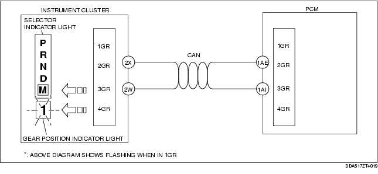

Selector indicator light construction/operation (sport AT) [FN4A-EL]
Construction
• The selector indicator light is built into the instrument cluster.
• When in the P, R, N or D range, the PCM detects the selector lever position based on an analog signal from the TR switch. When in the M range, the PCM detects the selector lever position based on a signal from the M range switch inside the selector lever component.
• When the instrument cluster receives a range signal or a gear position signal from the PCM via CAN communication, the selector lever position and the gear position indicator lights illuminate or flash accordingly.
Operation
Gear position indicator light flash
- • When the driver's down-shift operation is cancelled, the gear position indicator light flash twice.
- - When the PCM cancels a shift operation, all of the signals are pulsed ON/OFF and when finally input to the instrument cluster, the on signal (ex. M1 signal when in 1GR) and the remaining three off signals (M2, M3, M4) are reversed to off and on signals respectively.
- • Based on a combination of input signals from the PCM, the instrument cluster determines the gear number (1GR displayed as "1"), and flashes the gear position number in the gear position indicator light and the selector indicator "M" light.
